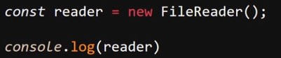
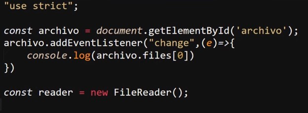
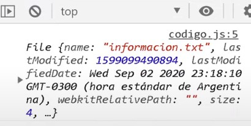
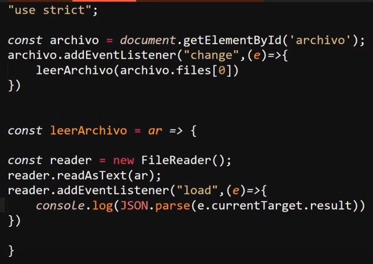
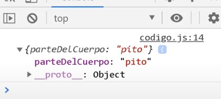
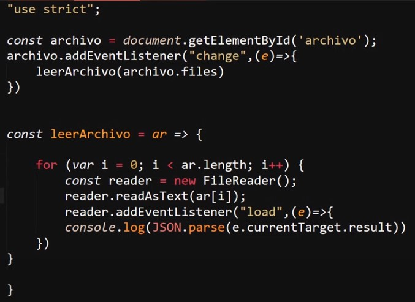
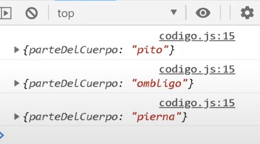
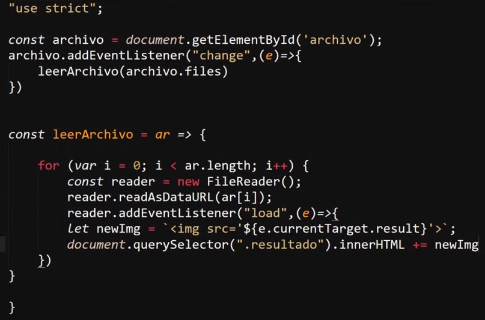
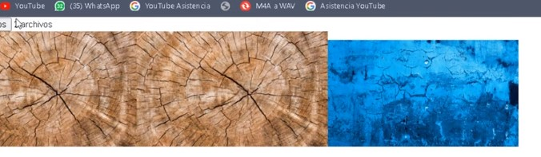

Se trata de una "api" diseñada en espesifico para trabajar con la leectura de archivos,una caractertica de esta es que por lo general se suele ejecutar en conjunto de promesas o eventos, esta "api" trabaja en base al objeto FileReader, el cual permite trabajar con los datos enviado por el usuario, en otras palabras este objeto permite manipular los archivos que hayan sido enviados por los usuarios.
Para crear el objeto de esta "api" se utiliza el constructor "FileReider()":
Ejemplo

Este objeto al vicularse con un input de tipo "file" recibe el archivo enviado, para obtener dicho archivos se utiliza el evento "change", el cual detecta cuando un input cambia de valor, en este caso es necesario pasarle un dato ("e") a la función del escuchador de eventos, para que de ese modo se pueda almacenar el archivo enviado, si por otra parte se desea observar el archivo en cuestión, esto se puede hacer imprimiendo en consola el metodo ".file" el cual es un array que recibe todos los archivos que sean enviados atravez del input, de la siguiente forma:
Ejemplo

Resultado

Obtener el contenido de un archivo
Por otra parte si lo que se quiere es manipular el archivo o leer su contenido se nesecita emplear la "api" "FileReader", más espesificamente al metodo ".readAsText", el cual permite leer el contenido de un archivo de tipo text.
En el siguite ejemplo se puede observar el como se vincula un input de tipo "file", se inicializa el evento "change" y se aplica la función "leerArchivo()" al archivo enviado por el usuario, esta función se iguala a una función flecha que recibe un dato ("ar") la cual creal el objeto "FileReader()" para finalmente utilizar su función "readAsText()", a la cual se le envia el archivo recibido por la función para de ese modo leer su contenido.
Ejemplo

Por ultimo se inicializa un segundo escuchador de eventos con el evento "load" para determinar si la carga del archivo concluyo, si esto sucede se aplica una función flecha la cual convierte a JSON la cadena de texto obtenida del archivo, (esto ya que el archivo es de tipo text).
Nota: el resultado se encuetra en "e.currentTarget.result" ya que: el que se esta mostrando en pantalla no es directamete la "api" en si, debido a que se usa una función para convertir el dato en JSON, los datos de "reader" se envian a la variable "e", estos datos se almacenana en "currentTarget" (target actual), ya aquí dentro de los datos de la api se utiliza el metodo ".result" el cual contiene el contenido del archivo.
Resultado

Nota: El contenido del archivo es un JSON en formato texto, y se utiliza la función flecha dentro de "leerArchivo()" para convertirlo a formato JSON y mmostrarlo en consola.
Otro ejemplo podria ser el como acceder al contenido de multiples archivos a la vez, esto es util debido a que en los input de tipo "file" es posible utilizar el atributo "multiple", el cual configura el input para que reciva X numero de archivos, para estos casos una buena forma de acceder a estos datos es atravez de un ciclo "for" para recorrer los elemtos del array "files", ya que en este se almacenaran todos los elemetos recibidos por el input.
Ejemplo

Resultado

Nota: Tener en cueta en este segundo ejemplo todo erray es eviado a la función, por lo tanto este se almacena en "ar".
ReadAsDataURL()
Se trata de un segundi metodo el cual permite obtener direcciones url validas que puedan ser utilizadas por el navegador, es decir este metodo en vez de obtener el texto del archivo, obtiene la dirección url de este, en si la forma de trabajar de este metodo es esactamente la misma que "readAsText" con la diferencia de que este metodo unicamente funciona para aquellos tipos de archivos que pueden ser operados usando url.
Ejemplo

En este ejemplo se tomo como base el codigo anterior, modificandolo para que trabaje en base a "ReadAsDataURL", debido a que este metodo retorna la ruta del elemento esta se almacena dentro de la variable "e" en la función flecha, más espesificamente en "e.currentTarget.result".
Resultado

Nota: Este no es verdaderamente un codigo funcional, en su lugar es un codigo explicatibo rapido, por lo que tiene varios aspectos mejorables, por ejmplo el constructor del elemtos HTML estaria fuera del bucle, a la vez que las imagnes se añadirian al interior de los elemetos despues de que el bucle culmine.
Nota: En este ejemplo el elemento "img" no es creado de forma correcta con "createElement" debido a esto no se generará un nodo de este elemento.